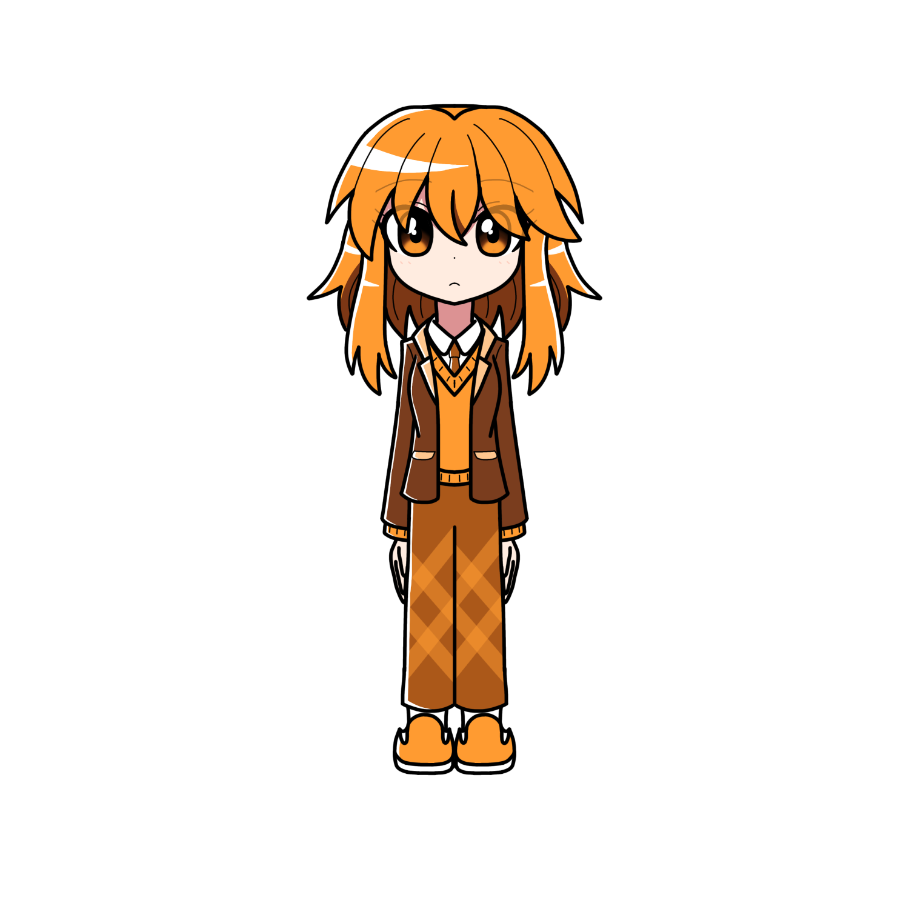

天花寺 エルゼ

天花寺エルゼ（テンゲイジ エルゼ）とは
プリズムアミュレットに登場する主人公の一人である。
概要
サイオジュエルはオレンジ色の雫型。
プロフィール
| 種族 | ドール |
|---|---|
| 性別 | 女性 |
| 年齢 | 15歳 |
| 誕生日 | 10月29日 |
| 身長 | 150cm |
| 血液型 | A型 |
| 出身 | ギゼリエ |
| イメージカラー | オレンジ |
| イメージCV | 田辺留依 |
人物像
外見
オレンジ色のショートヘア。 なだらかなツリ目で、 まつ毛が長め。
茶色・オレンジ色ベースのブレザーと
チェックが入っている長ズボン（スラックス？）を着用している。
近眼であり、かつては眼鏡を着用していたが、
魔物退治を行うようになってからは、眼鏡への愛着のあまり、
眼鏡が壊れることを気にしてしまい、魔物退治に集中出来なくなってしまった。
そのため現在は眼鏡を外している
（ちなみに眼鏡自体はずっと持参している。遠くの物をしっかり見たい場合などに着用する）。
性格
プリズムアミュレットのメンバーの一人。 サークル「サイレンスドロップス」のリーダーでもある。
物静かで真面目な性格。 周りと比べ自己主張が少なく、口数が少ない。
そのため「影が薄い」と言われることもある。決して人見知りではないのだが、
単独行動を好む性格や感情表現の乏しさから周りに距離を置かれている。
本人もこのことを少し気にしている。
決まり事にうるさく、 規則を破ることは少ない。
プリアミュの中で悪ふざけをする回数は最少。
だが相対的に常識人寄り、というだけで決して完全な優等生、という訳ではない。
年相応の面もあり、緊急事態の際には
己の正義のために規則を破り大胆な行動に出ることもある。
基本的に動じない。お化けや怖い物に対しての耐性がある。
しかし、仲間や信頼する人が大きく関わる事態になると酷く動揺する。
ちなみにエルゼの感情と表情は、他のキャラとは少し法則性が異なる。
前述したように、エルゼ自身から他者に積極的に関わったり、
何かトラブルを起こすことが少ない。
しかしなぜか巻き込まれ癖があり、
周囲のトラブル（特にメアリー関連）に意図せず関わりがち。
読書が趣味。知的好奇心があり、気になることがあればすぐ本を読む。
しかし、一から何かを考えることが苦手。
ファニリシアに関することならプリアミュの誰よりも詳しい反面、
専門用語の知識はあまりない。
計算等がやや苦手だったり、機械音痴でもある。
ちなみに、本を読むこと自体は幼い頃から好きだったのだが、
本格的に熱中し始めたのは実は約一年前。
シックで落ち着いたデザインを好む。最低限の身だしなみには気を遣っているが、
オシャレ自体には興味はない。煌びやかな物や華やかな物、派手な物は少し苦手。
暗い場所にも気に入っている。友達の影響でダークで恐ろしい物にも興味がある。
バイオリンの演奏を習い事として普段からしているが、
エルゼ自身が好んでいる楽器はベースである。
ちなみに今後習いたい楽器としてコントラバスを挙げている。
食べ物は苦い食べ物が好き。少食であり薄味が好き。食事はゆっくりと食べる。
なお、辛い食べ物に強い耐性がある。
超激辛のカレーライスをケロッとした表情で食べていたこともある。
エルゼ自身は小さい動物を好むが、大抵は動物たちから吠えられたり逃げられたりする。
ただ、大型動物にはよく好かれる
口調
一人称は「私」 基本的に語尾には「。」が付く。
「……なの。」「……かな？」等の、やや女性的な中性口調。
自分より年上の人や先輩には敬語で話すことが多い
（サイレンスドロップスのメンバーなど、タメ語で話すことを推奨されている場合は敬語を解く）。
能力
呪文は「ヴァーミアダピュラファムリムル」
炎属性のプリズムパワーを使う。固有魔法は「サイコキネシス」
物を器用に動かすことが出来るほか、やろうと思えば物を破壊することも出来る。
グリモワールを使ってプリズムパワーを使う。